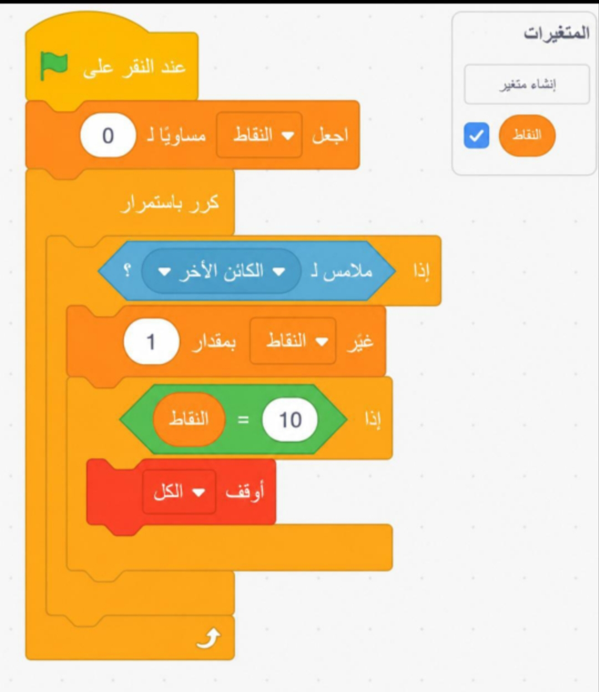
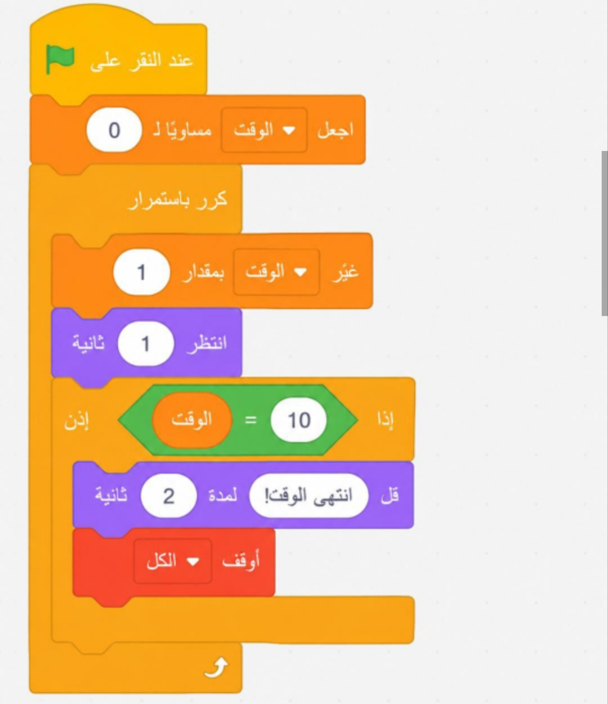
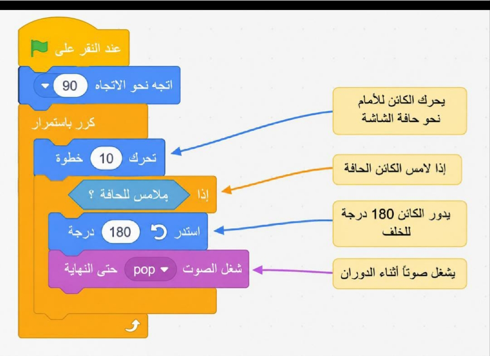

المعرفة: أوظف في هذا الدرس ما تعلمته من معارف في الإجابة عن الأسئلة الآتية:
السؤال الأول: أوضح المقصود باللبنات البرمجية مع ذكر أنواعها.
هي أوامر برمجية جاهزة تُستخدم لتحديد ما يجب أن يفعله البرنامج. وتشمل أوامر مثل «التحرك»، و«التكرار»، و«التغيير».
أنواع اللبنات البرمجية في سكراتش:
أولًا: لبنات الحركة (Motion Blocks).
ثانيًا: لبنات الهيئة (Looks Blocks).
ثالثًا: لبنات الصوت (Sound Blocks).
رابعًا: لبنات الأحداث (Events Blocks).
خامسًا: لبنات التحكم (Control Blocks).
سادسًا: لبنات المتغيرات (Variables Blocks).
سابعًا: لبنات الاستشعار (Sensing Blocks).
ثامنًا: لبنات العمليات (Operations Blocks).
السؤال الثاني: كيف يمكنني إضافة جمل برمجية في سكراتش لتنفيذ حدث محدد، مثل النقر على أيقونة تشغيل البرنامج؟
يمكنك إضافة الجمل البرمجية في سكراتش باستخدام لبنة الحدث التي تبدأ عند النقر على أيقونة تشغيل البرنامج، وهي:
عند النقر على العلم الأخضر
ثم تضع تحتها اللبنات التي تريد تنفيذها، مثل:
عند النقر على العلم الأخضر
تحرك 10 خطوة
قل «مرحبًا» لمدة 2 ثانية
أي أن لبنة «عند النقر على العلم الأخضر» هي التي تجعل البرنامج ينفذ الأوامر عند تشغيله.
التطبيق
السؤال الأول:
(أ) أضيف كائنًا من مكتبة Scratch وأجعله يتحرك للأمام عددًا محددًا من الخطوات. ثم أفكر: كيف يمكن تعديل سرعة الحركة باستخدام لبنة «تحرك»؟
تعديل سرعة الحركة باستخدام لبنة «تحرك»:
كلما زادت قيمة الخطوات في لبنة «تحرك»، تحرك الكائن مسافة أكبر في مرة، فيبدو أنه يتحرك بشكل أسرع. وإذا قللنا عدد الخطوات، تصبح الحركة أقصر وأبطأ.
(ب) أجرب إضافة حلقة «كرر باستمرار» إلى المقطع البرمجي؛ لجعل الكائن يتحرك بشكل مستمر.
ماذا يحدث إذا وضعت لبنة «انتظر [ ] ثانية» داخل الحلقة؟
نوقف الحركة مؤقتًا للمدة التي نحددها، ثم تستمر الحركة وتتكرر من جديد.
مثلاً إذا وضعنا «انتظر 2 ثانية»، سيتحرك الكائن ثم ينتظر ثانيتين، ثم يتحرك مرة أخرى، وهكذا باستمرار.
السؤال الثاني: أستخدم لبنة «عند الضغط على المفتاح» لإنشاء برنامج يتحرك فيه الكائن للأعلى عند ضغط المستخدم على مفتاح السهم الأعلى. أصف كيف يمكن تعديل البرنامج لتحريك الكائن في الاتجاهات الأربعة باستخدام المفاتيح الأخرى.
الفكرة الأساسية:
في سكراتش، لبنة «عند الضغط على المفتاح...» تستجيب لكل مفتاح على لوحة المفاتيح.
إذا أردنا أن يتحرك الكائن في الاتجاهات الأربعة (أعلى - أسفل - يمين - يسار)، نحتاج إلى استخدام أربع لبنات أحداث، واحدة لكل مفتاح.
التطبيق:
1. للتحريك للأعلى:
من مجموعة الأحداث (Events): اسحب لبنة «عند الضغط على المفتاح ↑».
من مجموعة الحركة (Motion): ضع لبنة «غيّر y بمقدار 10».
هذا يحرك الكائن إلى الأعلى.
2. للتحريك للأسفل:
«عند الضغط على المفتاح ↓».
«غيّر y بمقدار -10».
3. للتحريك لليمين:
«عند الضغط على المفتاح →».
«غيّر x بمقدار 10».
4. للتحريك لليسار:
«عند الضغط على المفتاح ←».
«غيّر x بمقدار -10».
النتيجة:
البرنامج الآن يجعل الكائن يتحرك:
للأعلى عند الضغط على السهم ↑.
للأسفل عند الضغط على السهم ↓.
لليمين عند الضغط على السهم →.
لليسار عند الضغط على السهم ←.
السؤال الثالث:
(أ) أنشئ متغيرًا باسم «النقاط» في Scratch وأجعل قيمته تزداد بمقدار 1 كلما لمست الشخصية كائنًا آخر. ما الشرط الذي يجب إضافته ليوقف اللعبة عند وصول النقاط إلى قيمة محددة؟

(ب) أضيف متغير «الوقت» لتتبع الزمن المنقضي في المشروع. كيف يمكن تعديل البرنامج لجعل الكائن يقول «انتهى الوقت!» بعد مرور 10 ثوانٍ؟

السؤال الرابع:
أصمم برنامجًا يحرك كائنًا نحو حافة الشاشة، وعندما يصل إلى الحافة، يدور للخلف ويعود مرة أخرى. كيف يمكن تحسين البرنامج ليضيف تأثيرًا صوتيًا في أثناء دوران الكائن؟

السؤال الخامس:
أرسم مخططًا انسيابيًا يمثل برنامجًا يجعل كائنًا يتحرك بشكل دائري، ويقول «انتهى» عند العودة إلى نقطة البداية. ما الخطوات الأساسية في الخوارزمية؟ كيف يمكن تحسين المقطع البرمجي لجعله أكثر تنظيمًا باستخدام اللبنات المتاحة في Scratch؟
المخطط الانسيابي (Flowchart) للبرنامج:
الخطوات الأساسية:
ابدأ.
ضع الكائن في نقطة البداية (تحديد موقع x, y).
كرّر:
تحريك الكائن خطوات قليلة.
تدويره بزاوية صغيرة (مثلًا 15 درجة).
هل عاد الكائن إلى نقطة البداية؟
نعم: اجعل الكائن يقول «انتهى» ثم توقف.
لا: ارجع إلى خطوة التكرار.
المخطط الانسيابي سيكون بالشكل:
↓
↓
[ابدأ]
↓
[اذهب إلى نقطة البداية]
↓
[كرّر]
↓
[تحرك خطوات + استدر بزاوية صغيرة]
↓
[هل عاد الكائن إلى نقطة البداية؟]
↓
نعم لا
↓ ↓
[قل انتهى] [العودة إلى كرّر]
↓
[توقف]
2. الخوارزمية في سكراتش:
عند النقر على العلم الأخضر:
اذهب إلى نقطة البداية.
كرّر عدد مرات = 24 مثلًا، إذا كان الاستدارة 15 درجة ليكمل دورة كاملة (360 ÷ 15).
تحرك 10 خطوات.
استدر 15 درجة.
قل «انتهى».
3. تحسين المقطع البرمجي في Scratch:
بدل كتابة الأوامر يدويًا عدة مرات، نستخدم لبنة التكرار (repeat) بدلًا من تكرار الكتل يدويًا.
يمكن إنشاء لبنة مخصصة (My Block) باسم «الحركة الدائرية» لتنظيم الكود أكثر.